MBLogic
for an open world in automation
MBLogic
for an open world in automation
Help - Configure Client Communications
Overview
The "Configure Clients" page provides an overview the current client communications configuration subsystem. This is divided into the following sections:
- TCP Clients
- Generic Clients
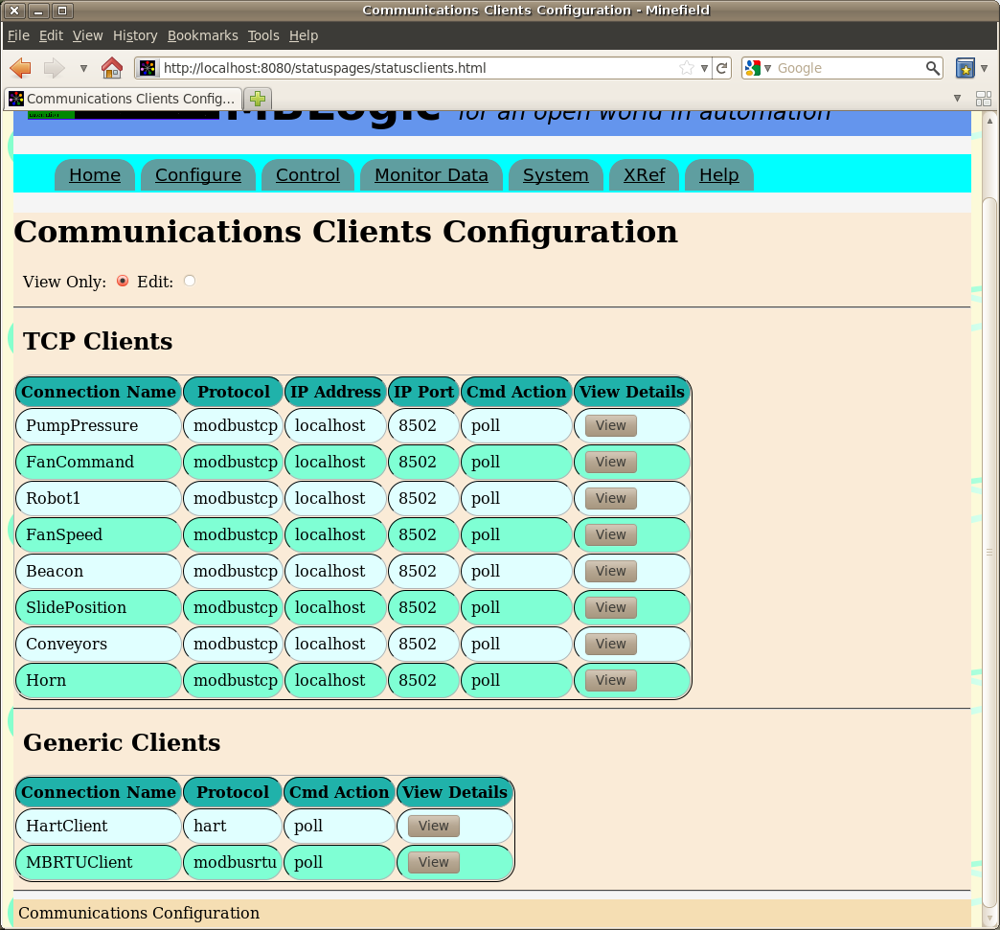
TCP Clients
The TCP clients table lists the active TCP clients. The items of data include:
- The connection name as assigned in the configuration file.
- The protocol
- The IP address to connect to.
- The IP port to connect to.
- The command action.
- A button which may be clicked to view more details.
When more details are selected, a new area will open up just below the client table to show the details for one client at a time. Selecting another details button will show the details for a different server. Selecting "hide details" will hide the details section of the page.
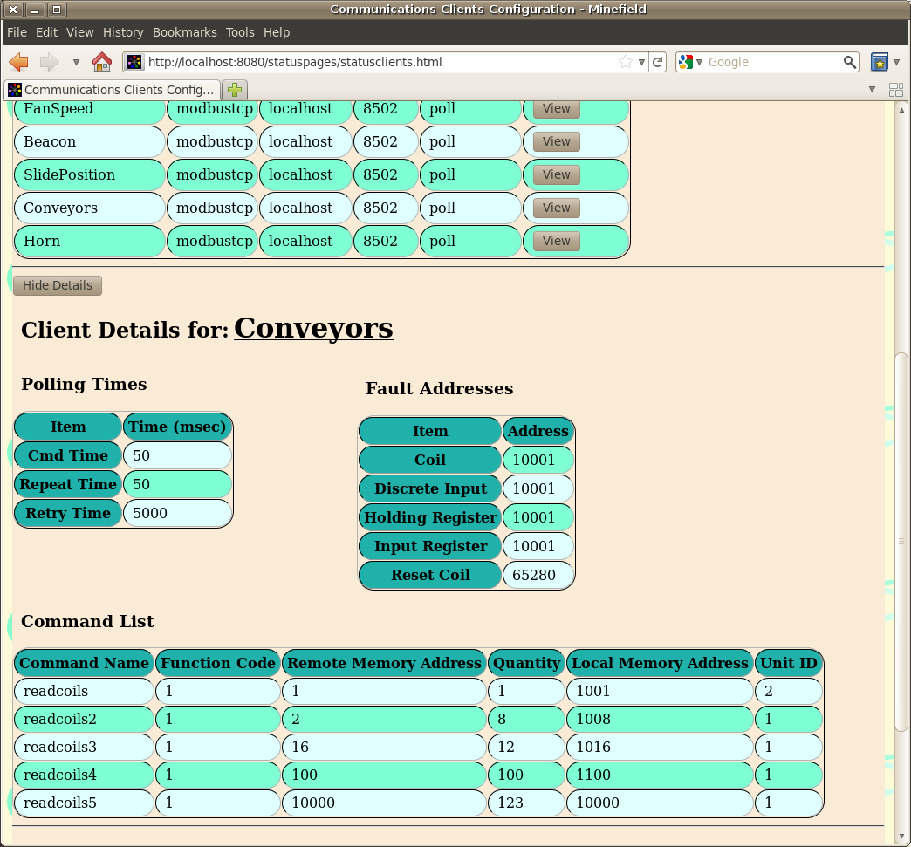
The correspondence between the configuration parameters and the web page labels is shown below.
| Item | Configuration Label | Description |
|---|---|---|
| Connection Name | [section heading] | The name of the client connection. |
| Protocol | protocol | The type of client protocol. |
| IP Address | host | The target IP address. |
| IP Port | port | The target IP port. |
| Cmd Action | action | The command action requested. |
| Cmd Time (msec) | cmdtime | The time delay (in milliseonds) between commands. |
| Repeat Time (msec) | repeattime | The time delay (in milliseonds) before all commands are repeated. |
| Retry Time (msec) | retrytime | The time delay (in milliseonds) before retrying after an error. |
| Discrete Input | fault_inp | The discrete input to use for reporting faults. |
| Coil | fault_coil | The coil to use for reporting faults. |
| Input Register | fault_inpreg | The input register to use for reporting faults. |
| Holding Register | fault_holdingreg | The holding register to use for reporting faults. |
| Reset Coil | fault_reset | The coil to use to reset the fault. |
Modbus Commands
Modbus commands have the following parameters:
- Function code - The Modbus function code.
- Remote Memory Address - The memory address on the field device.
- Quantity - The number of elements to read or write.
- Local Memory Address - The memory address in the system data table.
- Unit ID - THe unit id sent to the field device.
Editing TCP Clients
To edit a TCP client, enable configuration editing and then click on a client in the display table. Edit the parameters and then press "change". To delete a client, press the "delete" button. To add a new client, press the "Add" button at the bottom of the table.
The client editing form is divided into the following sections:
- Connection
- Polling
- Faults
- Commands
Click on the appropriate selection to edit those parameters.
Connection
This defines the connection parameters including:
- Connection name - This can be any valid name.
- IP Address - The TCP/IP address to connect to.
- IP Port - The TCP/IP port to connect to.
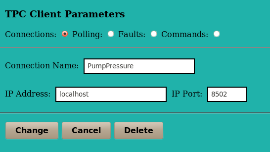
Polling
The polling parameters include the following:
- Command time.
- Repeat time.
- Retry time.
All times are in milliseconds.
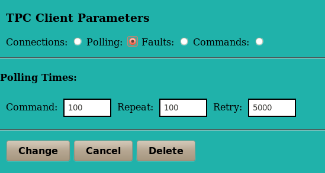
Faults
The fault parameters are the data table addresses in which to report communications errors. These include the following:
- Coil
- Discrete Input
- Holding Register
- Input Register
- Reset Coil
All addresses must be valid data table addresses.
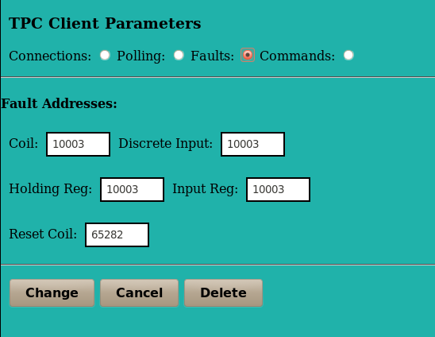
Commands
The command parameters are the client communications commands which are to be executed. These include the following:
- Command - The command name. If you have not added any commands there will be nothing you can select here.
- Function Code - The Modbus function code.
- Remote Address - The data table address in the field device.
- Local Address - The data table address in the local system.
- Quantity - The number of data table addresses to read or write. The valid range for this will vary depending on the function code selected.
- Unit ID - The Modbus unit id to send with the client request. Whether or not the value is significant depends on whether or not the field device being addressed uses it.
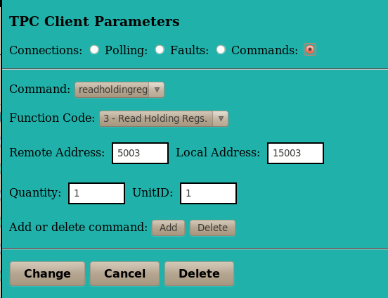
To add a new command, press the "add" button. This will open a new dialogue which allows a new command name to be entered. To delete a command select the command you wish to delete and then press the "delete" button (beside the "add" button).
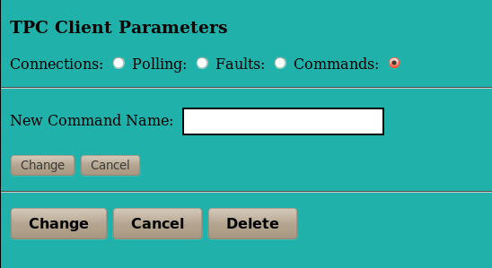
Generic Clients
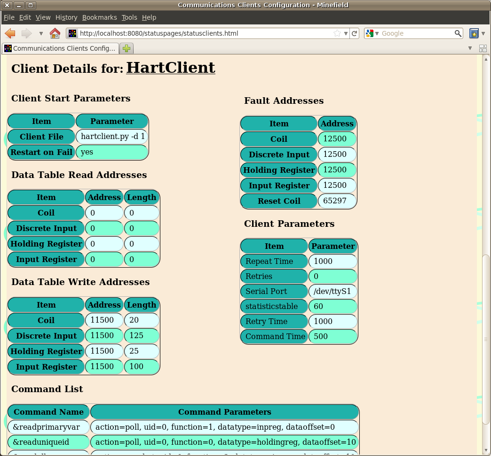
The generic clients table lists the active generic clients. The items of data include:
- The connection name as assigned in the configuration file.
- The protocol
- The command action.
- A button which may be clicked to view more details.
When more details are selected, a new area will open up just below the client table to show the details for one client at a time. Selecting another details button will show the details for a different server. Selecting "hide details" will hide the details section of the page.
| Item | Configuration Label | Description |
|---|---|---|
| Connection Name | [section heading] | The name of the client connection. |
| Protocol | protocol | The type of client protocol. |
| Cmd Action | action | The command action requested. |
| Client File | clientfile | The client file name. |
| Restart on Fail | restartonfail | The restart on fail characteristics. |
| Data Table Read Addresses | readtable | The addresses to read from the main system and copy to the generic client. Unused addresses are displayed as blanks. |
| Data Table Write Addresses | writetable | The addresses to read from the generic client and copy to the main system. Unused addresses are displayed as blanks. |
| (Fault) Discrete Input | fault_inp | The discrete input to use for reporting faults. |
| (Fault) Coil | fault_coil | The coil to use for reporting faults. |
| (Fault) Input Register | fault_inpreg | The input register to use for reporting faults. |
| (Fault) Holding Register | fault_holdingreg | The holding register to use for reporting faults. |
| (Fault) Reset Coil | fault_reset | The coil to use to reset the fault. |
Commands
Commands are parsed into the command name and the command parameters. The command parameters are displayed as a single block.
Editing Generic Clients
To edit a generic client, enable configuration editing and then click on a client in the display table. Edit the parameters and then press "change". To delete a client, press the "delete" button. To add a new client, press the "Add" button at the bottom of the table.
The client editing form is divided into the following sections:
- Client Start
- Data Table Read
- Data Table Write
- Faults
- Client Parameters
- Command List
Click on the appropriate selection to edit those parameters.
Client Start
The client start parameters include the following:
- Connection Name
- Protocol
- Client File
- Restart on Fail
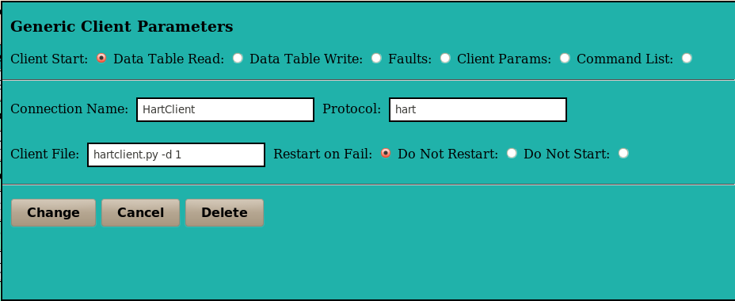
Data Table Read
The addresses to read from the main system and copy to the generic client.
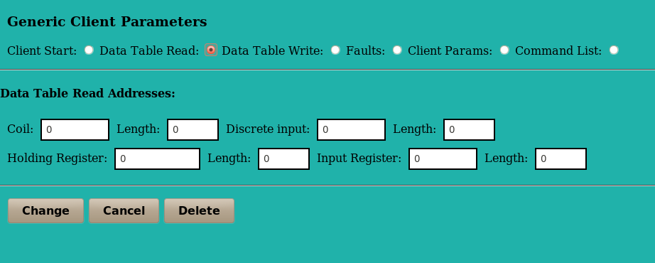
Data Table Write
The addresses to read from the generic client and copy to the main system.
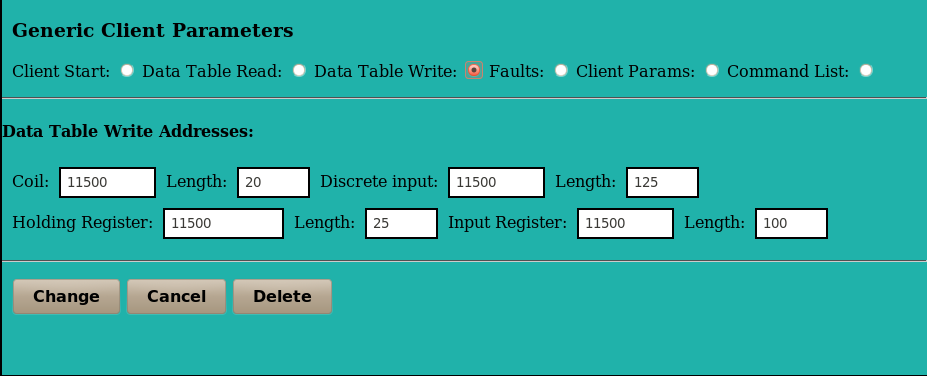
Faults
The addresses used to report errors.
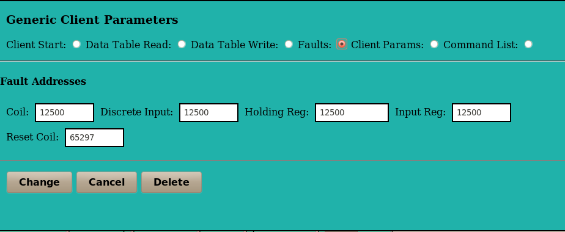
Client Parameters
Client parameters are edited via a simple text box. Since each generic client can define its own parameters they cannot be verified by the form. Verification must be done by the generic client itself at run time. Client parameters are added to the configuration file exactly as written.
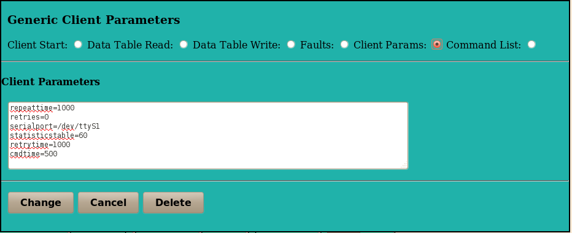
Command List
Commands are edited via a simple text box. Since each generic client can define its own commands they cannot be verified by the form. Verification must be done by the generic client itself at run time. Commands are added to the configuration file exactly as written.
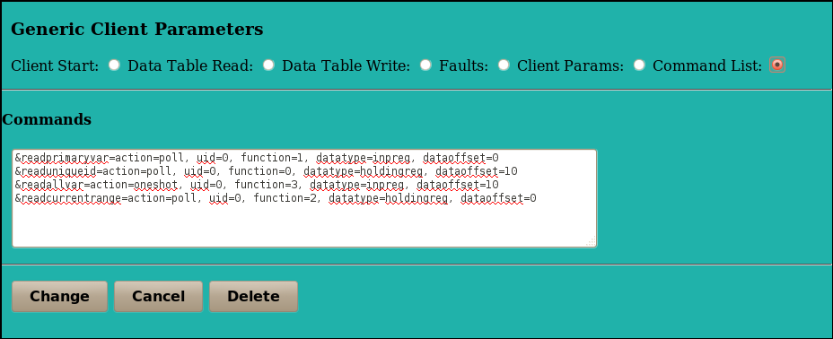